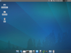

Xubuntu Installation
Dieser Artikel wurde für die folgenden Ubuntu-Versionen getestet:
Ubuntu 16.04 Xenial Xerus
Ubuntu 14.04 Trusty Tahr
 Xubuntu bietet mit der Desktop-DVD die Möglichkeit, das System zu testen, ohne es zu installieren. Aus dem Live-System oder direkt aus dem Bootmenü der DVD kann Xubuntu auch installiert werden. Die Desktop-Variante geht von einem (halbwegs) modernen Standard-PC aus und bietet eine komfortable Auswahl von Standardanwendungen.
Xubuntu bietet mit der Desktop-DVD die Möglichkeit, das System zu testen, ohne es zu installieren. Aus dem Live-System oder direkt aus dem Bootmenü der DVD kann Xubuntu auch installiert werden. Die Desktop-Variante geht von einem (halbwegs) modernen Standard-PC aus und bietet eine komfortable Auswahl von Standardanwendungen.
Hinweis:
Dieser Artikel wurde mit Ubuntu 11.04 erstellt, gilt aber auch für neuere Ubuntu-Versionen. Grundlage ist der Installationsassistent Ubiquity.
Experten-Info:
Dieser Artikel beschreibt die Arbeitsschritte einer Installation im BIOS-Modus. Man sollte sich vorab darüber informieren, ob der Rechner mit einem EFI Bootmanagement versehen ist und wie die Festplatte(n) formatiert wurden! Weitere Informationen stehen unter EFI Grundlagen zur Verfügung!
Installation¶
Die Installation von Xubuntu unterscheidet sich nicht wesentlich von der Ubuntu Installation, daher erfolgt hier nur eine tabellarische Übersicht der Schritte zur Installation der neusten Version.
| Xubuntu Desktop Installation | ||
| Kapitel | Abschnitt | Bild |
| Booten | Das Bootmenü startet mit der Sprachauswahl, die später über die Taste F2 erneut aufgerufen werden kann. | |
| Das Bootmenü gibt unter anderem die Auswahl, Xubuntu als Live-System zu testen oder direkt zu installieren. |  | |
| Die Tastaturbelegung des Bootmenüs kann mit der Taste F3 verändert werden. | ||
Mit der Taste
F4 können grundlegende Installationsoptionen festgelegt werden. Die Variante normal ist Standard. | ||
| Hilfsmittel zur Barrierefreiheit können über die Taste F5 aktiviert werden. | ||
| Weitere Optionen für spezielle Hardware und um nur Freie Software zu installieren erhält man mit der Taste F6 . | ||
| Es folgt der Bootvorgang, und entsprechend der Auswahl wird das Live-System gestartet oder direkt mit der Vorbereitung zur Installation begonnen. | ||
| Live-System | Über den Eintrag "System -> Xubuntu 11.04 installieren" im Anwendungsmenü kann die Installation auch aus dem Live-System erfolgen. | |
| Installation vorbereiten | Zuerst wird die Spracheinstellung für die Installation festgelegt. | |
| Darauf folgen weitere Einstellungen, wie Aktualisierungen während der Installation und Installation der Software von Drittanbietern. Siehe auch Vorbereitung der Installation. | ||
| Im nächsten Schritt wird die Festplatte zur Installation vorbereitet, siehe dazu auch Partitionierung. | ||
| Nun werden die Vorbereitungen abgeschlossen. | ||
| Während der Partitionierung | Bei der Tastaturbelegung wird entsprechend der Sprache eine übliche Belegung vorgeschlagen. Es kann aber auch eine automatische Erkennung erfolgen. Hierbei wird der Benutzer angewiesen bestimmte Tasten zu drücken, anhand derer die Belegung erkannt werden kann. | |
| Nun werden der Rechnername festgelegt und der erste Benutzer angelegt. | ||
| Auch die Zeitzone wird anhand der Sprache vorgeschlagen und kann bestätigt oder verändert werden. | ||
| Während der Installation | Während der Installation werden einige Informationen angezeigt, von denen hier nur ein Bild gezeigt wird. | |
| Abschluss und Neustart | Die Installation wurde abgeschlossen, und der Rechner kann neu gestartet werden. | |
| Die DVD kann aus dem Laufwerk entfernt werden und der DVD-Auswurf geschlossen werden. Mit der Eingabe-Taste ⏎ wird der Neustart eingeleitet. | ||
| Nach dem Neustart und ggf. notwendigen Aktualisierungen präsentiert sich der neue Desktop von Xubuntu (im Bild Ubuntu 11.04). |  | |
 - Übersichtsseite mit allen Installationsanleitungen
- Übersichtsseite mit allen Installationsanleitungen- Erstellt mit Inyoka
-
 2004 – 2017 ubuntuusers.de • Einige Rechte vorbehalten
2004 – 2017 ubuntuusers.de • Einige Rechte vorbehalten
Lizenz • Kontakt • Datenschutz • Impressum • Serverstatus -
Serverhousing gespendet von